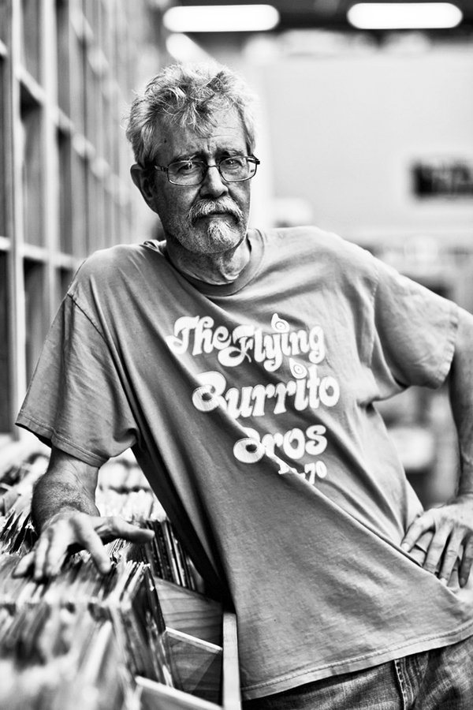

Dave Voorhees started in the music retail business selling 45's out of his parent's North Seattle home back in 1974. On a trip to Texas, he uncovered 3,000 rare Blues records that were in high demand by vinyl collectors. Word of mouth quickly spread of his vintage collection, prompting Dave to look for a storefront to sell his goods. In 1979, he established his first retail space and eventually settled on a location in Seattle's Ballard neighborhood in 1984.
Over nearly thirty years, Bop Street Records has expanded its inventory to more than half a million records. All musical genres are available from Rock, Jazz, Blues, Soul/R&B to Country, Folk, World, Kids', Soundtracks and others. The store carries over 10,000 Classical LP's, an extensive collection of 45's, 78's, 8-Track and Cassette tapes. The store has been visted by members of the bands Radiohead, The Pogues, Pearl Jam and many others. Questlove of The Roots and Jonathan Richman have lost themselves in his fabulous archive.
